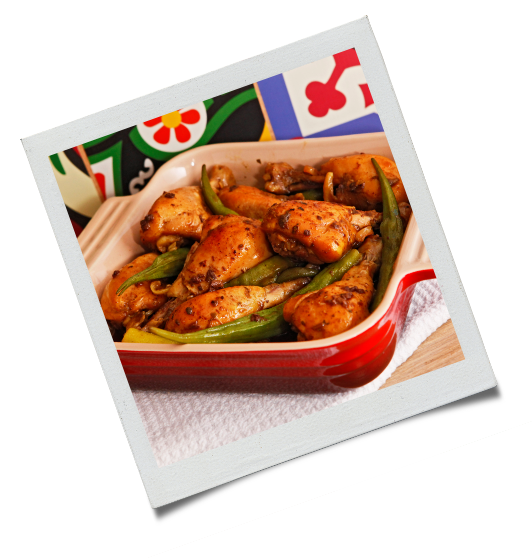

1 kg de frango cortado a passarinho

2 colheres sopa de óleo
1 cebola ralada
2 dentes de alho amassado
Pimenta do reino, cheiro verde picadinho a gosto
400g de quiabo picado
Sal a gosto

Em uma panela coloque óleo e vá fritando o frango aos poucos e reserve;
Na mesma panela que fritou o frango coloque alho, cebola, pimenta, sal e refogue o quiabo. Deixe dourar mexendo de vez em quando;
Depois que o quiabo estiver dourado, junte o frango e deixe cozinhar com a panela tampada até ficarem macios;
Adicione 1 xícara de chá de água para formar caldinho, depois de tudo bem cozido retire e sirva com angu.